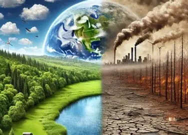

Causas
Las principales causas del cambio climático son las actividades humanas —especialmente la quema de combustibles fósiles, la deforestación y procesos industriales— que aumentan los gases de efecto invernadero como CO₂ y metano, responsables de más del 75 % de las emisiones globales según Naciones Unidas.